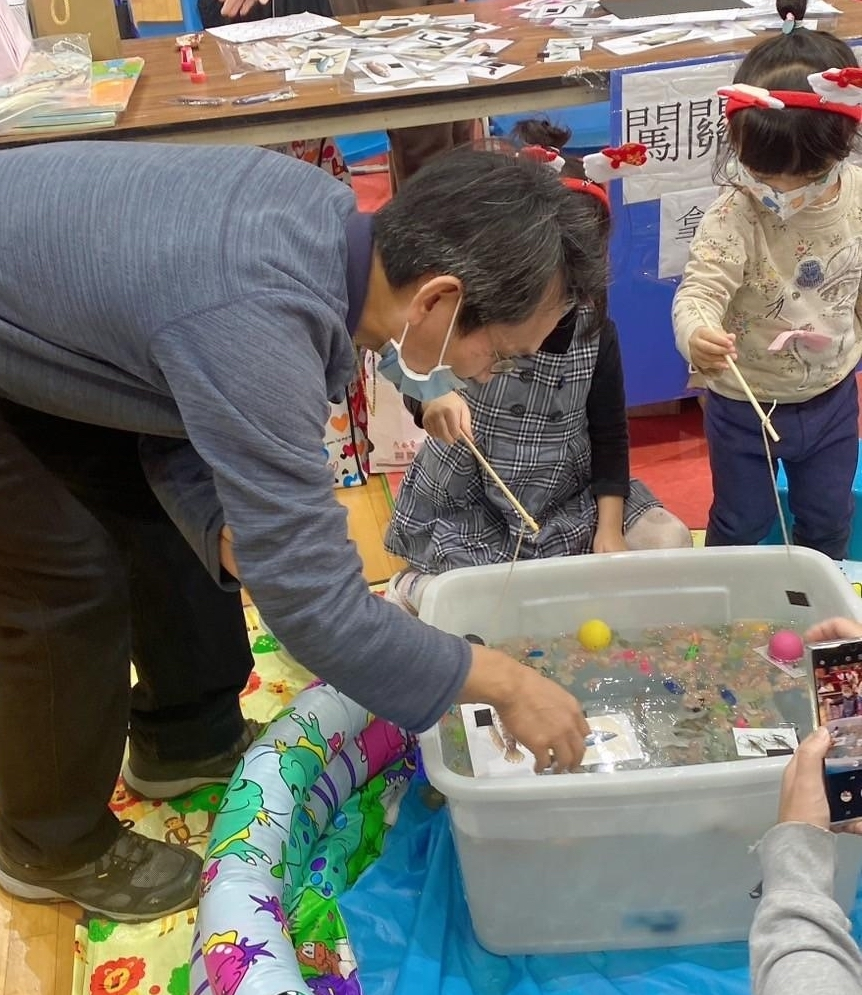
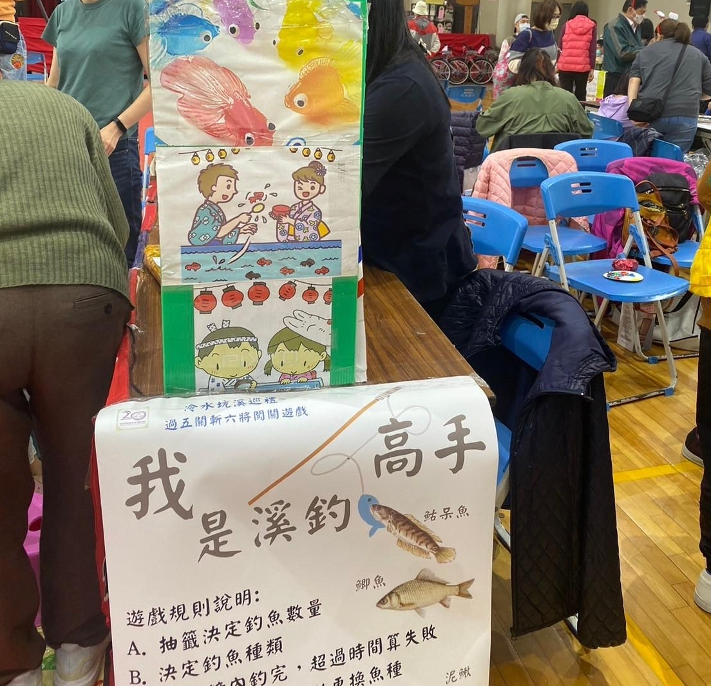
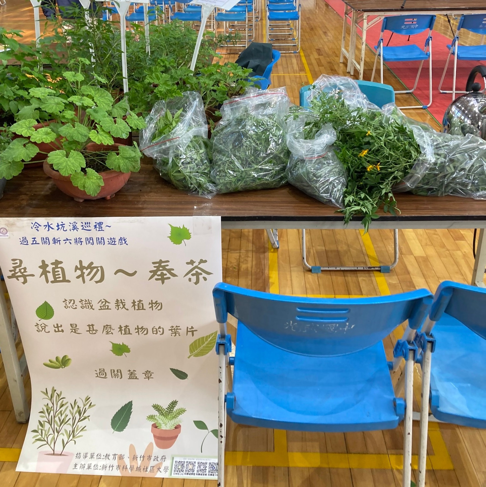

冷水坑溪親子遊
科學城親親遊在地生態社群這次準備了冷水坑溪巡禮活動。地點在光武國中的禮堂，同時間也是科學城社大的成果展，非常的熱鬧！ 社群準備了五個關卡希望能夠對冷水坑溪的歷史文化有一個基本的認知。以下是分享當天的活動照片。
第一關『講古聽福伯』關主：瑞福老師。說明冷水坑溪的歷史。讓民眾了解在這附近曾經有一條很有名的溪流。

第二關『我是約溪高手』關主：雅婷老師。準備了一個游泳圈，可以讓小朋友玩約魚遊戲。


第三關『冷水坑溪景點對對碰』關主：國琴老師。以六個冷水坑溪附近的景點當作骰子的點數，民眾可以以擲骰子的點數說出景點的名稱。
第四關『尋植物~奉茶』關主：泓瑜老師。認識盆栽植物，現場備有香草茶可以享用。

第五關『冷水坑溪DIY 紙黏土捏塑』關主：品慧老師。以當時的冷水坑溪魚種為樣本，由民眾以紙黏土捏出其中一種魚。